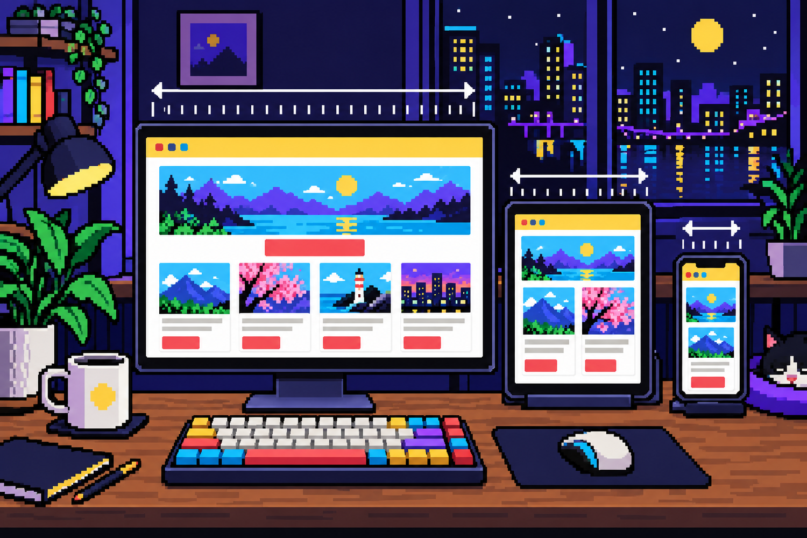

Welcome to DTM Preview
내 사이트를
내 사이트를
기기별로
한눈에
데스크탑 · 태블릿 · 모바일 화면을 나란히 띄우고, 폭을 줄여가며 레이아웃이 바뀌는 순간을 확인하세요. 주소창에 포트 번호만 입력해도 돼요.
NEW 웹 효과 도감 — 효과를 직접 움직여 보고 이름·AI 프롬프트 확인하기- 123 단독 보기
- 0 모두 보기
- M 모드 전환
- Space 재생
- ←→ 폭 조절
- R 새로고침

3 Devices Live Resize